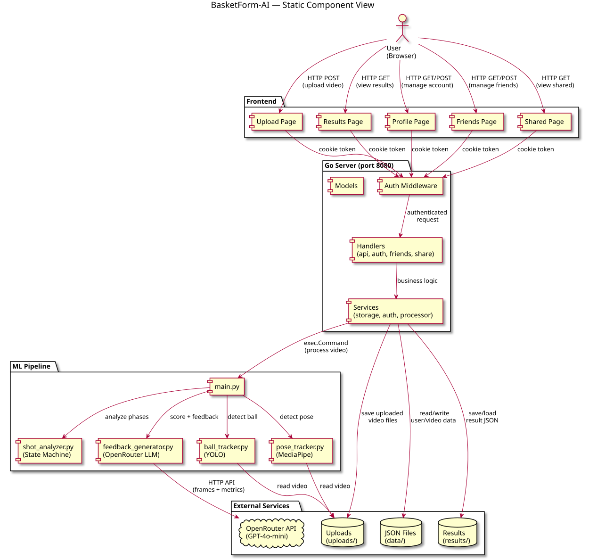
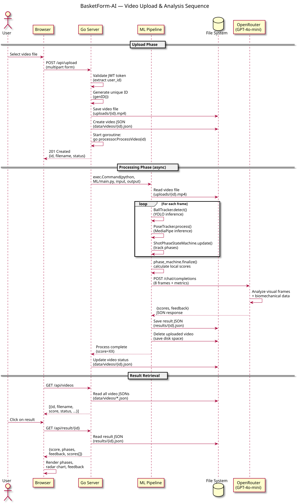
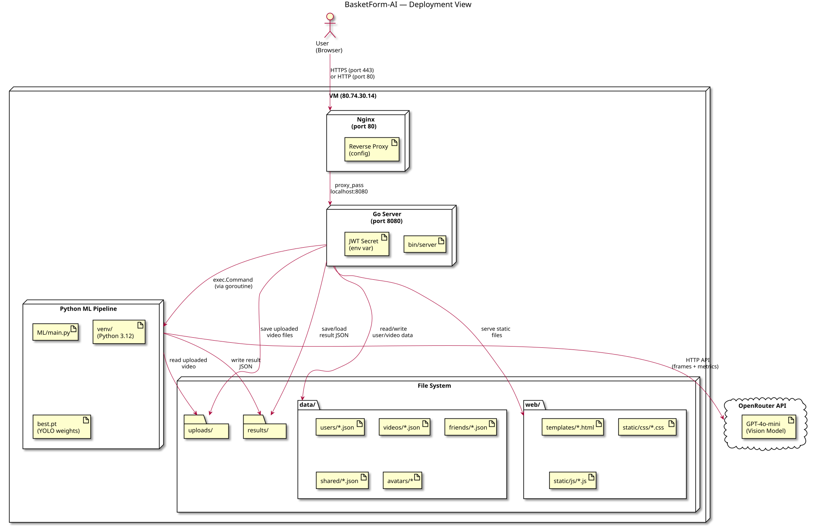

BasketForm-AI Architecture¶
This document describes the architecture of BasketForm-AI — a web application for analyzing basketball shooting form from video. It serves as the canonical maintained architecture index artifact.
Overview¶
BasketForm-AI is a monolithic web application with three main layers:
- Frontend — HTML/CSS/JS pages served as static files
- Backend — Go HTTP server handling API, auth, and orchestration
- ML Pipeline — Python scripts for video analysis (MediaPipe, OpenCV, YOLO, LLM)
Architecture Views¶
| View | Description | Source File | Rendered Diagram |
|---|---|---|---|
| Static (Component) | System components and their relationships | component-diagram.puml | component-diagram.svg |
| Dynamic (Sequence) | Video upload → analysis → result flow | sequence-diagram.puml | sequence-diagram.svg |
| Deployment | How the system is deployed on VM | deployment-diagram.puml | deployment-diagram.svg |
{kind=link}
{kind=link}
{kind=link}
Static View — Component Diagram¶

The component diagram shows the main internal components of the system, their relationships, external systems, and communication protocols.
What the Diagram Shows¶
The system has four major component groups:
- User (Browser) — the external actor interacting with the application via HTTP.
- Frontend — five HTML pages (Upload, Results, Profile, Friends, Shared) served as static files. All API calls use fetch() with JWT cookie authentication.
- Go Server — the central orchestration layer with:
- Auth Middleware — validates JWT tokens on every protected request
- Handlers — five handler modules (api, auth, friends, share, page handlers) each responsible for one domain
- Services — business logic (storage, auth, processor)
- Models — data structures shared between layers
- ML Pipeline — five Python modules:
main.py— entry point and coordinatorball_tracker.py— YOLO-based ball detectionpose_tracker.py— MediaPipe pose estimationshot_analyzer.py— state machine tracking shot phasesfeedback_generator.py— LLM-based scoring via OpenRouter API (GPT-4o-mini)
External dependencies include: - JSON Files (data/) — persistent storage for users, videos, friends, shared results - File System (uploads/, results/) — video files and analysis results - OpenRouter API — external LLM service for vision-based scoring
Coupling and Cohesion¶
- Low coupling between frontend and backend — separated by HTTP API boundary; frontend has no knowledge of internal server structure.
- Moderate coupling between Go server and ML pipeline — connected via
exec.Commandcall and file I/O (video path in, JSON report out). This is intentional for simplicity. - Low coupling between ML modules — each Python module has a single responsibility and clear interfaces.
- High cohesion within each handler — auth.go handles only authentication, friends.go handles only friend relationships, etc.
- High cohesion within ML modules — each does one thing (ball tracking, pose estimation, phase analysis, feedback generation).
Maintainability Implications¶
- JSON file storage is simple to understand and debug, but limits scalability beyond ~10 concurrent users due to file-level locking.
- exec-based ML integration means Python changes require no Go recompilation, but prevent hot-reloading during development.
- Frontend uses vanilla JavaScript with no build step — easy to modify but limits code reuse across pages.
Quality Requirements Supported or Constrained¶
| QR | Status | Explanation |
|---|---|---|
| QR-001 (API < 2s) | Supported | Go server handles requests fast; ML processing runs async in goroutines |
| QR-002 (Auth security) | Supported | JWT + bcrypt; middleware enforces auth on all protected routes |
| QR-003 (UI hints) | Supported | i18n system provides tooltips and labels on all pages |
| QR-004 (ML accuracy) | Partially supported | Depends on pose tracker quality; LLM vision analysis adds intelligence |
| QR-005 (Concurrency) | Constrained | JSON file storage + mutex limits to ~10 concurrent users |
Dynamic View — Sequence Diagram¶

The sequence diagram shows the most important workflow in the system: video upload, ML analysis, and result retrieval. This is the core value-creation flow.
What the Diagram Shows¶
The sequence covers three phases:
-
Upload Phase: User selects a video → Browser sends multipart POST to Go server → Server validates JWT, generates unique ID, saves video file and metadata JSON → Server spawns goroutine for async processing → Returns 201 to browser.
-
Processing Phase (async): Go server calls Python ML script via
exec.Command→ ML reads video, runs ball detection (YOLO) and pose estimation (MediaPipe) frame by frame → Shot phase state machine tracks DIP → ASCENT → RELEASE → FOLLOW-THROUGH transitions → ML sends 8 key frames + metrics to OpenRouter LLM (GPT-4o-mini) → LLM returns phase scores and detailed feedback → Results saved as JSON → Uploaded video deleted to save disk space. -
Result Retrieval: Browser polls GET /api/videos for list → User clicks result → Browser requests GET /api/result/{id} → Server reads result JSON → Returns score, phases, feedback, radar chart data → Browser renders phases, chart, and feedback.
Why This Scenario Is Important¶
This flow is the primary value-creation pipeline of the product. Every user interaction — uploading a video, waiting for analysis, reviewing results — depends on this sequence working correctly. It touches every major component: frontend, auth, storage, ML pipeline, and external LLM API.
Architecture Decisions and Quality Requirements¶
This flow validates several architectural decisions: - ADR-001 (JSON Storage): Results are stored as JSON files, read on demand. Works well for single-user access patterns. - ADR-002 (exec ML Integration): The async goroutine pattern prevents blocking the HTTP server during 10-30 second ML processing. - ADR-003 (JWT Auth): Every API call in this flow passes through JWT validation.
Quality requirements exercised: - QR-001: The upload endpoint returns quickly (201) while processing runs in background - QR-004: ML accuracy depends on pose tracker + LLM vision analysis quality - QR-005: Concurrent uploads are handled by separate goroutines, limited by CPU
Deployment View — Deployment Diagram¶

The deployment diagram shows how the system is deployed and operated in production.
What the Diagram Shows¶
The system runs on a single VM (80.74.30.14) with the following components:
-
Nginx (port 80) — reverse proxy that forwards HTTP traffic to the Go server. Handles SSL termination and caching headers.
-
Go Server (port 8080) — the application binary running as a systemd service. Handles all API requests, serves static frontend files, and orchestrates ML processing.
-
Python ML Pipeline — invoked as subprocess by the Go server. Uses MediaPipe, OpenCV, YOLO model (
best.pt), and OpenRouter LLM API. -
File System — all persistent state stored locally:
data/— JSON files for users, videos, friends, shared results, avatarsuploads/— uploaded video files (deleted after processing)results/— analysis result JSON files-
web/— static frontend files (HTML, CSS, JS) -
OpenRouter API — external cloud service for LLM vision scoring (GPT-4o-mini).
User access path: Browser → HTTPS/HTTP (port 80) → Nginx → Go Server (port 8080).
Why This Deployment Model Was Chosen¶
A single-VM monolithic deployment was chosen for: - Simplicity: One server to manage, one deployment process, one set of logs - Cost: Single VM is the cheapest hosting option for an MVP - Speed: No container orchestration overhead; direct file access for ML processing - Demo-friendly: Easy for customers and TAs to access via single URL
How the Deployment Supports or Constrains the Product¶
Supports: - Fast iteration — code changes require only binary recompilation and restart - Direct file access — ML pipeline reads/writes files without network overhead - Simple debugging — all logs in one place, direct SSH access
Constrains: - Single point of failure — VM crash takes down entire service - CPU-limited — ML processing for multiple concurrent videos competes for CPU - No horizontal scaling — cannot add more servers without refactoring - Disk-bound — video storage limited by VM disk size
Deployment Considerations¶
- The
OPENROUTER_API_KEYenvironment variable must be set for LLM scoring - ML model weights (
best.pt) must be present in the ML directory - Python virtual environment with MediaPipe, OpenCV, and dependencies must be active
- Nginx must be configured to proxy all traffic to port 8080
- The Go binary must be rebuilt after any Go code changes
- The server process should be managed by systemd for automatic restart
Architectural Quality Summary¶
Coupling¶
- Low between frontend and backend (HTTP boundary)
- Moderate between Go server and ML (exec + file I/O) — intentional tradeoff for simplicity
- Low between ML modules (clear single responsibilities)
Cohesion¶
- High within each handler domain (auth, friends, share)
- High within ML modules (each does one thing)
Maintainability¶
- JSON storage: simple but not scalable
- exec ML integration: easy to understand, no hot-reload
- Vanilla JS frontend: no build step, easy to modify
Architecture Decision Records¶
The following ADRs document key architectural decisions:
| ADR | Decision | Status |
|---|---|---|
| ADR-001 | Use JSON file storage instead of relational database | Accepted |
| ADR-002 | Use exec-based ML integration instead of microservice | Accepted |
| ADR-003 | Use JWT authentication instead of server sessions | Accepted |
These ADRs are linked to quality requirements in docs/quality-requirements.md.